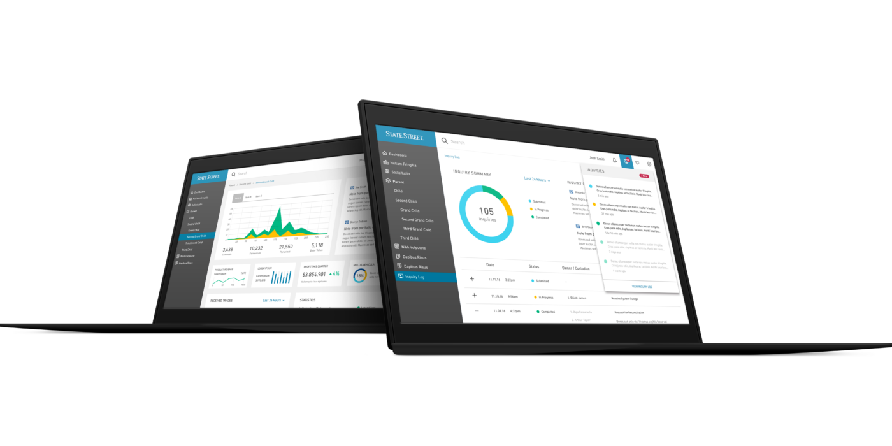

B2B software design engagement bringing clarity to complex financial data for custodial banking teams.

Custodial banking teams manage enormous volumes of financial data — but the tools they relied on were built for an older era of software. State Street engaged us to bring a design system and visual language to their internal tools more consistent and intuitive across products. The work focused on establishing a clear design system, a set of reusable components, and interaction patterns that internal teams could implement.